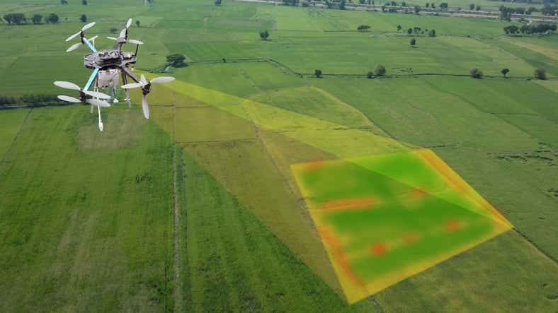
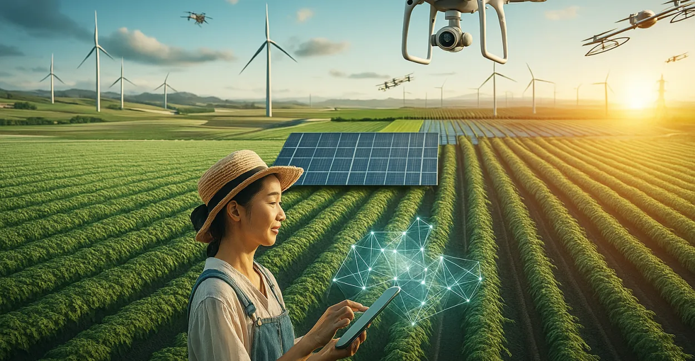
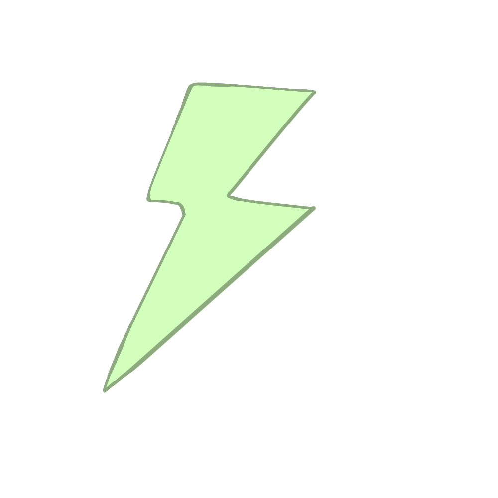
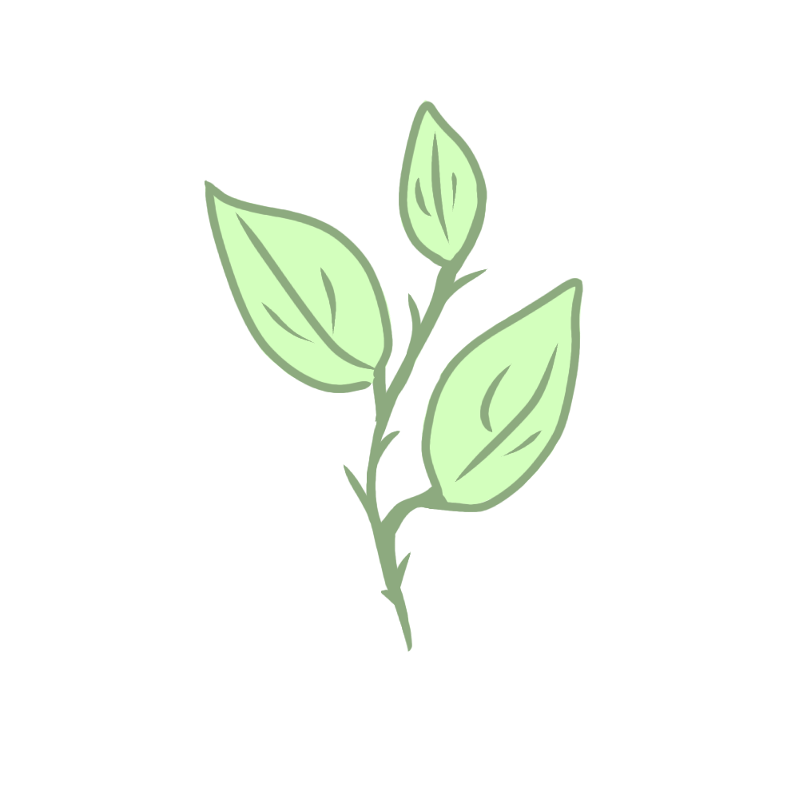
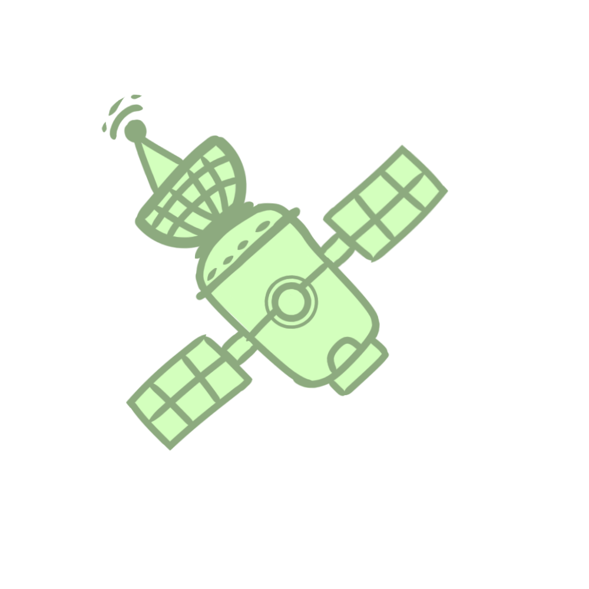
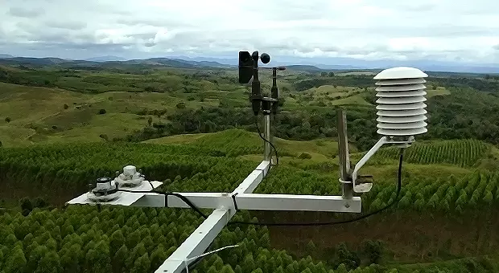

Público Alvo
.jpg)
Para projetos que ultilizam sensores remotos
Agricultura inteligente
Monitoramento Ambiental
Estações meterológicas
Sistema de coleta de dados em áreas remotas
Projetos sustentáveis de baixo consumo energético
Um sistema inteligente para otimizar o uso de energia e recursos, ativando determinado sistema apenas quando for necessário

Operam em lugares com pouca infraestrutura de energia e comunicação como áreas rurais
Aumento exagerado do consumo de energia, além da falta de sincronização eficiente

Sensor que verifica e coleta apenas dados neccesários para o funcionamento
Tela de monitoramento em tempo real que mostra o resultado
Arduino Uno, Tela lcd 16x2, Sensor LDR, LED's de status, Buzzer e Pushbutton
Otimiza o uso de energia ativando determinados sistemas apenas quando necessário reduzindo disperdicio
Promover uma troca de dados mais precisa, organizada e confiável entre diferentes sistemas
Facilitar a implementação de tecnologias de baixo consumo em projetos acessíveis e escalaveis
Demonstrar como tecnologias inspiradas na industria espacial podem ser adaptadas para resolver problemas reais na terra
Agricultura inteligente
Monitoramento Ambiental
Estações meterológicas
Sistema de coleta de dados em áreas remotas
Projetos sustentáveis de baixo consumo energético

Evita desperdício energético reduzindo o consumo de energia dos sensores e dispositivos
O sistema é apenas ativado quando nessesário mantendo uma maior autonomia nos sistemas

O SATSYNC também promove o uso sustentável de energia, otimo em projetos de baixo custo
Reduz custos de troca de bateria, deslocamento técnico e monitoramento manual

O projeto é inspirado em sistemas espaciais e satélites ultilizando a sincronização inteligete
Abrange a ideia de que tecnologias espaciais são benéficas e podem ser usadas de maneira inteligente na terra

O sistema atua como uma central de sincronização responsável por ativar sensores apenas em horários programados
Entre suas aplicações temos: Monitoramento climático, Agricultura de precisão, Redes IOT de baixa energia